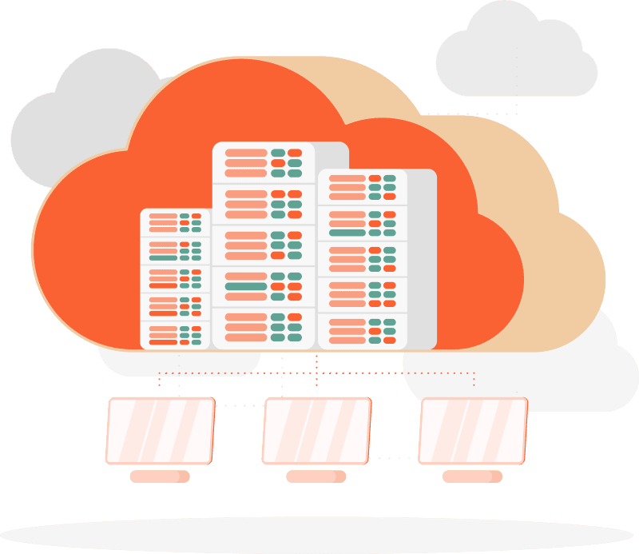

11.0 Introduction to cloud
{kind=link}
What is the cloud?
What is cloud computing?
Cloud computing is the on-demand delivery of IT resources over the Internet with pay-as-you-go pricing. Instead of buying, owning, and maintaining physical data centers and servers, you can access technology services, such as computing power, storage, and databases, on an as-needed basis from a cloud provider like Amazon Web Services (AWS).
Let’s break this down:
on-demand - I can request any time, any amount of resources(for which i have quota) and i will get them
IT resources - I can get any type of resources(available) that i need to run my application (virtual machines, databases, storage, etc )
over the Internet - I can run it from anywhere, I need access to the Internet, VPN (most of the services will be available only in a private network) and an account with permissions.
pay-as-you-go pricing - I will pay only for the resources that i use, when I remove them I will stop paying for them.
Note
A computing cloud is a virtualized environment that provides on-demand computing resources such as servers, storage, and applications over the Internet. Cloud computing allows users to access and use these resources without having to own or manage the underlying physical infrastructure.
Cloud computing typically involves a third-party provider, such as Amazon Web Services (AWS), Microsoft Azure, or Google Cloud Platform (GCP), which owns and operates the underlying infrastructure, and provides various services to customers on a pay-as-you-go or subscription basis.
Flavors of clouds - some of the taste funny
There are three main types of cloud computing:
Public cloud: computing resources are shared by multiple organizations and are accessible over the public internet.
Private cloud: computing resources are dedicated to a single organization and are typically hosted on-premises or in a private data center.
Hybrid cloud: a combination of public and private clouds that are integrated and share data and applications.
Cloud computing offers many benefits, including scalability, flexibility, cost savings, and ease of use. It has become an essential technology for many businesses and organizations, enabling them to innovate, compete, and operate more efficiently.
On-premises vs Cloud
Note
On-premises computing refers to the use of computing resources that are owned and managed by an organization. These resources are typically located on the organization’s premises, but they can also be hosted in a private data center.
On premise |
Cloud |
|---|---|
You own the servers |
Someone else owns the servers |
You update the hardware |
Someone else updates the hardware |
You hire the infra guys |
Someone else hires the infra guys |
You pay the rent of the datacenter |
Someone else pays the rent of the datacenter |
You have one geographical location |
You have many geographical locations available |
You have to maintain hardware, software and application |
You have to maintain just application and sometimes software |
{kind=link}
Why use cloud
It’s a fault-tolerant solution
In most cases, we have a disaster recovery environment that is not used, it’s there just in case of a disaster. In the cloud, we can use the same environment for production and disaster recovery, and we pay only for the resources we use.
Example: We have a web application with a database, and we need to have a production environment and backups to this environment (sometimes the backup environment is a separate environment in the same data center), in case that production has a problem we can swap easily with the backup environment. But to be truly fault fault-tolerant we need to have another environment in another physical location.
3-2-1Rule:3 copies of data
2 different media
1 offsite copy
The problem with the DR environment is that had to be the same as the production environment, and we pay for it even if we don’t use it. We have to make sure that data is being replicated in the DR environment, and we have to test it from time to time to make sure that it works. That environment will get obsolete, unused, and consumes money even if we don’t use it.
Now if you think that if the company grows and moves to another market, you need again to have multiple data centers to manage.
Scalable
In the era before the cloud, every time we need more resources we had to endure a requisition and procurement process: convince management that is a good idea, discuss with financial what we can get, select a vendor, create a purchase order, wait to get it approved, wait for the hardware to arrive, install it, configure it, test it, and finally use it. In the cloud, we can scale up and down in minutes, and we pay only for the resources we use.
Now most of the cloud services have scalability as a service and we only have to configure when to scale up (get bigger machines) or scale out (get more machines).
Imagine that you’re an e-commerce company and you need to prepare for Black Friday and Christmas, you need to scale up your infrastructure to handle the traffic, and after that, you need to scale down. In the cloud, you can do that in minutes, but before you would buy lots of machines use them for a short while, and then give them around the company (because you want them to remain unused for the year) then you don’t get them back because are used, and again you had to purchase another set next year.
Of course, our goal is always to have our capacity near to what we need, but due to the nature of the business, we can’t always predict the traffic and we need to be prepared for the worst. So we use bigger machines.
Globalization
When we move to new markets we need to have a data center in that market, and we need to manage it. In the cloud, we can have a data center in every country where the cloud provider has a data center, and we don’t have to manage it. This need sometimes is about performance, sometimes about regulations, and sometimes about latency.
Agility
Trying out new technologies was never as easy, we can consume them as a service in the cloud, or easily build them and we pay only for the time we tried out. If we don’t like it we can just stop using it, and we don’t have to worry about the hardware, software, and licenses.
Now I can do a test during the afternoon, build the environment, demo it, and then remove it, keep all the information about it, and if I need it again I can just build it again.
Cost
Cost is a funny thing, knowing how much money was invested in a project was sometimes impossible, in the cloud we get an invoice and we can see what we’re spending money. We can also see how much we’re spending on each project, and we can optimize it:
We trade upfront expenses for variable expenses
Stop spenging money on running and maintaining data centers
Stop guessing capacity or using overprovisioned resources
Benefit from massive economies of scale
Increase speed and agility of procurement
Warning
If you’re not paying attention your company will pay money!
Services on cloud
Infrastructure as a Service
IaaS contains the basic building blocks for cloud IT. It typically provides access to networking features, computers (virtual or on dedicated hardware), and data storage space. IaaS gives you the highest level of flexibility and management control over your IT resources. It is most similar to the existing IT resources with which many IT departments and developers are familiar.
Examples: Amazon EC2, Google Compute Engine (GCE), Rackspace, Windows Azure, Cisco Metapod, and VMware’s vCloud.
Platform as a Service
PaaS removes the need for you to manage underlying infrastructure (usually hardware and operating systems), and allows you to focus on the deployment and management of your applications. This helps you be more efficient as you don’t need to worry about resource procurement, capacity planning, software maintenance, patching, or any of the other undifferentiated heavy lifting involved in running your application.
Examples: Amazon S3, Google Cloud Storage, Azure Blob Storage, Rackspace Cloud Files, and Google Cloud SQL, Amazon Lambda, Google App Engine, Azure Functions.
Software as a Service
SaaS provides you with a complete product that is run and managed by the service provider. In most cases, people referring to SaaS are referring to end-user applications (such as web-based email). With a SaaS offering, you don’t have to think about how the service is maintained or how the underlying infrastructure is managed. You only need to think about how you will use that particular software.
Example: Email
Cloud providers
Major cloud providers Q3 2023 according to statista.com
Amazon Web Services (AWS) - 32%
Microsoft Azure - 23%
Google Cloud Platform (GCP) - 11%
Alibaba Cloud - 4%
IBM Cloud - 3%
Salesforce - 3%
Oracle Cloud - 2%
Tencent Cloud - 2%
Others - 20%
Moving to cloud
Note
Moving to the cloud is a process that involves planning, preparation, and execution. It can be a complex and challenging undertaking, but it offers many benefits, including scalability, flexibility, cost savings, and ease of use.
Types of the Cloud:
Public cloud
Private cloud
Hybrid cloud (most companies are using this)
Most of the companies are multi-cloud to avoid vendor locking.
Migration approaches:
Rehost (lift and shift) - this is a common first step that involves moving an application to the cloud without making any changes to its architecture. This approach is relatively quick and easy, but it does not take full advantage of the cloud’s capabilities.
Refactor (replatform) - in the approach, we’re checking to see if we can reuse services in the cloud. For example, instead of managing our database, we look if we can consume a database as a service. This approach is more complex and time-consuming than rehosting, but it can provide significant benefits.
Rearchitect (rebuild) - use all the services that the cloud provides - becoming cloud native. This approach is the most complex and time-consuming, but it can provide the greatest benefits.
Retire (sunsetting) - when moving to the cloud we’re looking at all the systems, sometimes we can create one that can be reused by more products, and we can retire the old ones.
Rebuild (replace) - sometimes a decision that we took before was not the best one, but now we can rebuild it in the cloud.
Retain (repurchase) - we’re consuming a service that is not available in the cloud, and we need to keep it, or is available from a vendor that we can continue working (Example: GitHub)
Virtualization and containerization
By virtualizing all our applications into containers we can mitigate vendor locking.
Types of services available in the cloud:
Computing (virtual machines, containers, serverless)
Storage (block, file, object)
Networking (virtual networks, load balancers, firewalls)
Databases (relational, non-relational, data warehouses)
Analytics (big data, data lakes, business intelligence)
AI and machine learning (speech recognition, image analysis, natural language processing)
Internet of Things (IoT) (device software, device management, analytics, visualization)
Management and governance (monitoring, logging, cost management, security)
Security, identity, and compliance (identity and access management, certificates, key management, compliance)
Developer tools (SDKs, IDEs, CI/CD, testing, deployment, monitoring)
Regions and Availability Zones
Note
A region is a geographical area on the planet containing at least one, but not more than a few data centers. Regions do not share infrastructure with each other, and are independent. This allows us to provide fault tolerance, stability, and resilience.